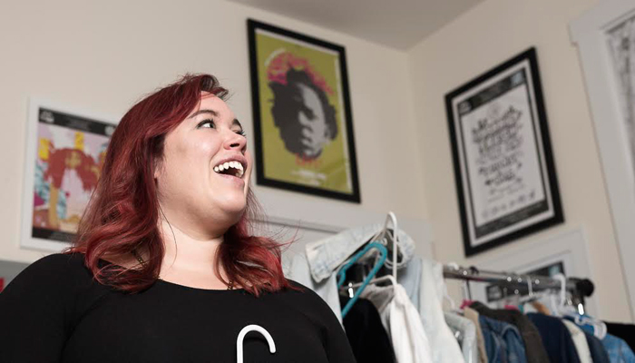

Q&A: EMMA MCKEE
There are no mistakes in life, the same goes for embroidery. Emma Mckee, better known as The Stitch Gawd, knows this all too well, so it’s no mistake that she found herself in immersed in Chicago’s Hip-Hop scene far from her hometown in Tulsa, Oklahoma after her stint in Canada had come to an abrupt ending. It’s also no mistake that she found solace in the music scene and found herself rubbing elbows and thus embroidering the backs for some of Chicago’s finest emerging artists and creatives like Louder Than A Bomb’s Kevin Coval, Malcolm London, Chance The Rapper, BJ The Chicago Kid, Vic Mensa, and even The Wests, Kanye and Kim.
AMFM: How did you get into embroidery? I know that your mom tried to get you into it when you were younger but you weren't into it. What changed?
EMMA MCKEE: I felt it was historically a hobby to keep women who were otherwise not occupied, occupied. Like the gentry, like the gentle types, women who had all this time on their hands, who didn't have to make money, and they only took care of their kids. Embroidery was associated with birth announcements and feminine themed stitchings. So at the time I was like, No. There were so many things I’d rather do with my time. It felt archaically feminine and I don't really ascribe to those types of perceptions. The craziest thing about all of this so far is seeing the reception I get about it. I feel like I had a kid or something! Like social media is so prevalent in everything that you do, and at a certain age you see everyone getting married and having kids, and reaching all these goals or whatever. The thing is that people see that I’m doing so well, and it's funny because nobody asks me about my boyfriend and about having kids anymore. They used to, because I'm a women of a certain age. They don't ask anymore, and It's really liberating. So it’s funny that I would take this very traditional, archaic and very fem thing and do it the way I’m doing it. That's why you have to stay away from irony. There's never been an art form whose product is so defined by the medium. It's weird that I came from something with so much story from it.
MCKEE: The first thing I’ve ever stitched was Chance The Rapper. I can't draw, or paint. Nothing.
AMFM: Does it come so easily to you?
MCKEE: It does. When people call me an artist I would always refute it. I wouldn't call myself an artist because the pieces I work on are made by actual artist and I'm just reinterpreting it. I got really uncomfortable with the monicar. When I started to realize that people were really receptive to it and really thought it was different, I was like ok it’s artistry. It's the artistry of pre-planning well and having good taste basically. It’s funny, people are just reflections of themselves, and the art I make is me reflecting what I think of them. People love that shit.
MCKEE: It was a joke. It was my rapper name. The coverage that I get, like photos, interviews and even the blogs I’m featured on, they treat me like I'm a rapper. There's a photo of me stitching with like a fucking blunt in my hand. Fake Shore Drive premiered a piece about me. Fake Shore Drive premieres rappers, not fucking cross stitchers. The girl who did the Fader article on me, we were talking and she joked and called me the Stitch Gawd. Four months later, I was at the Kanye West concert and four strangers in cars yelled Stitch Gawd out at me. It just stuck. If someone wants a piece they’ll just send me the praying hands emoji and say “Bless me Stitch Gawd.” Or like if I like your album, someone will retweet me and say “Blessings from the Stitch Gawd.”
MCKEE: Well, Chance is special. My dad’s a preacher and my mom’s an opera singer, so I grew up around church music, which is community based, and classical music, which is a big sound and very choral. Both things emotional. On a certain level it was them, because there was no exposure to things before that. The first pop record I ever heard I was like six years old and it was Paul Simon's Graceland. My parents left me alone a lot when I was a kid because I was like a tiny grown up. I would walk myself down to the record store in St. Louis and I just bought albums based on the albums artwork because I didn't know how else to choose. I got a Queen album, the Clueless soundtrack, Friday After Next and The Wallflowers. I think that’s why Hip-Hop is so important. I was always like a weirdo misanthrope and what better place to go and shield yourself than with like a bunch of other people who are talking about being isolated. I always liked narratives. I have a quote from the poem ‘Motto’ by Langston Hughes on my back. It says “I play it cool and dig all jive, that's the reason I stay alive,” and my motto as I live and learn is, “dig and be dug in return.”
 (Chance The Rapper)
(Chance The Rapper)
AMFM: Over the last 2 years you've really blown up. How did you get to this point? How are you coping with all of that and how are you trying to maintain yourself in the midst of it?
MCKEE: People think I'm crazy when I tell them they can’t buy my work because they aren't for sale. That's been the saving grace. It has allowed me to leap over hurdles because I'm not looking for anyone else's approval. I get to pick the people who put it on. There's a high demand for my work because only really dope people have it. So I’m not wasting my time on lames. It also takes me so much time to do that shit. I said not to the Grammy Museum because I had so much shit to do for the homies. I don't make stuff for just anyone, but this is my version of holding it down for my city.
(Louder Than A Bomb Founder Kevin Coval)
AMFM: Why do you think people have gravitated towards your work?
MCKEE: Thank you Chicago rap community for embracing me with open arms. I feel so lucky. I would be totally different if I wasn't accepted in the artist community and rap scene. The past three years I wrote for a blog and I went to hella shows and I was friends with people like Kevin Koval. I always made sure to be really nice and really candid but also I stuck to myself a lot. I was a loner but I still knew people. I first met Chance when he was doing open mics in the community.
(Street Artist Kashink)
AMFM: Why do you think you gravitate to these types of people?
MCKEE: They’re the ones with the best stories and the best art. I'm making art for people I really fuck with. I think it's confound to people because there's obviously a relevant strain to all these people I made stuff for. Bill Cunningham said, “Clothes are the everyday armor that protects us from the mundanity of everyday life.” And that’s the truth. You’re saying stuff by how your dressed and what your wearing. If you have access to Supreme that means you have the hook up or you’re rich. If you're wearing those Jordan boots that came out that means ‘you got the plug’ or your super important. We use the things that we wear to tell something about ourselves.
MCKEE: When people would ask me to do something for them I didn't know how to price it. I wasn't sure if I should do it by square inch or time spent. If I do minimum wage hourly each piece would cost thousands of dollars. I didn't know how to value it and I refuse to. I saw what people would do for it. A dollar is worth the same thing, but people’s time is a whole different currency. One person's time is definitely more valuable than another’s. If you can get your hands on someone's time, especially if they’re talented and smart who know what you can do with it. It negated so many steps for me. I didn't have to show up at galleries. I didn't have to compromise or make shit for people I don't like. I think as women we have to say yes to many things with smiles on our faces. It's not really a world made for us, and I find joy in saying no to things I don't want to do. There's some weird power in that.